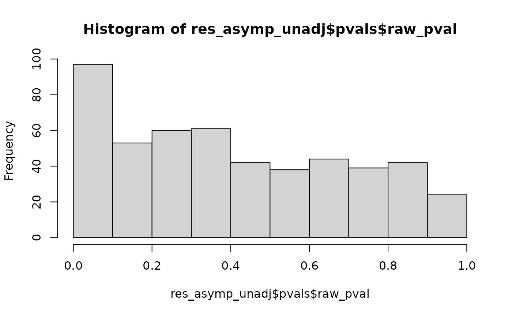
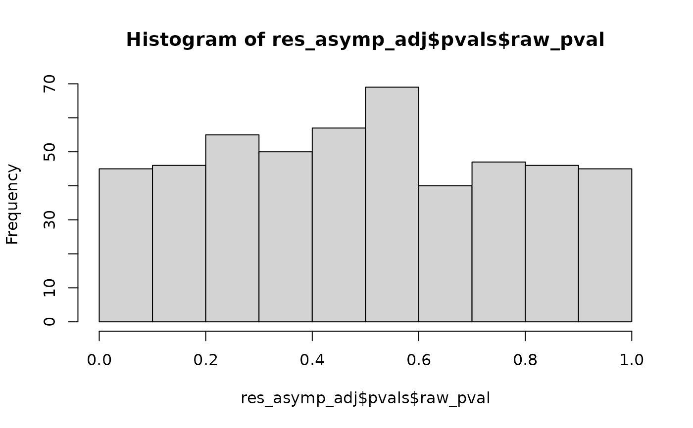
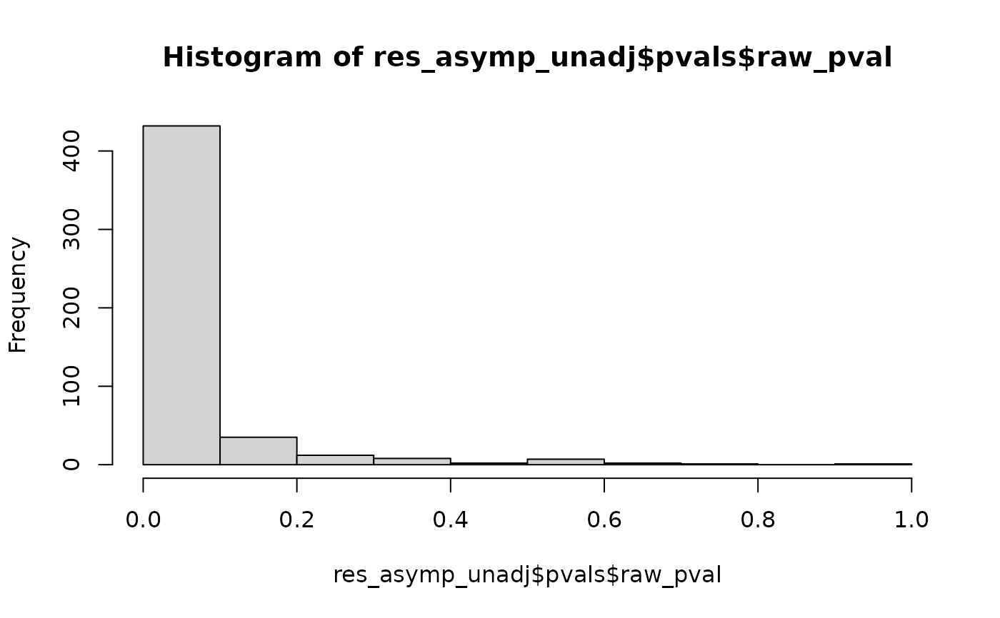
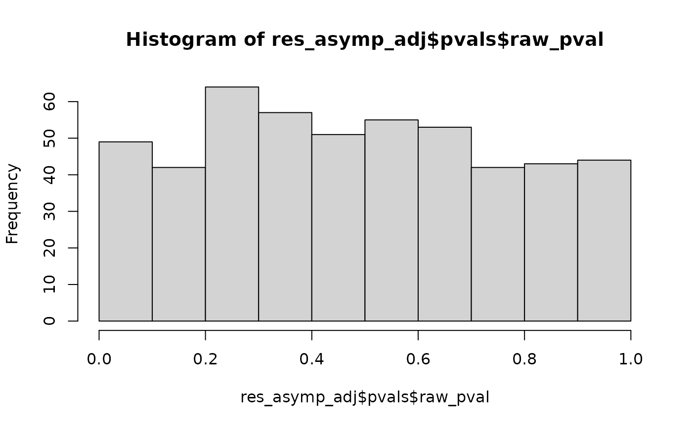

Multiple conditional independence testing
Usage
cit_multi(
M,
X,
Z = NULL,
test = c("asymptotic", "permutation"),
n_perm = 100,
n_perm_adaptive = c(n_perm, n_perm, n_perm * 3, n_perm * 5),
thresholds = c(0.1, 0.05, 0.01),
parallel = interactive(),
n_cpus = max(1L, detectCores(logical = FALSE) - 1L, na.rm = TRUE),
adaptive = TRUE,
space_y = TRUE,
number_y = 10
)Arguments
- M
a
data.frameor amatrixof sizen x rcontaining the different Y variables to test for conditional independence withXadjusted onZ- X
a data frame of size
n x pof numeric or factor vector(s) containing the variable(s) to be tested for conditional independence againstXadjusted onZ. Multiple variables (p>1) are supported by the asymptotic test, and also by the permutation whenZisNULL.- Z
a data frame of size
n x qof numeric or factor vector(s) containing the covariate(s) to condition the independence test upon. Multiple covariates (q>1) are only supported by the asymptotic test.- test
a character string indicating whether the
'asymptotic'or the'permutation'test is computed. Default is'asymptotic'.- n_perm
the number of permutations. Default is
100. Only used iftest == 'permutation'.- n_perm_adaptive
a vector of the increasing numbers of adaptive permutations to be performed when
adaptiveisTRUEif p-values are belowthresholds.length(n_perm_adaptive)should be equal tolength(thresholds)+1. Default isc(n_perm, n_perm, n_perm*3, n_perm*5).- thresholds
a vector of the decreasing thresholds to compute adaptive permutations when
adaptiveisTRUE.length(thresholds)should be equal tolength(n_perm_adaptive)-1. Default isc(0.1, 0.05, 0.01).- parallel
a logical flag indicating whether parallel computation should be enabled. Default is
TRUEifinteractive()isTRUE, else isFALSE.- n_cpus
an integer indicating the number of cores to be used for the computations. Default is
max(1L, paralleldetectCores(logical = FALSE) - 1L, na.rm = TRUE). Ifn_cpus = 1, then sequential computations are used without any parallelization.- adaptive
a logical flag indicating whether adaptive additional permutations should be performed. Default is
TRUE. Only used iftest == 'permutation'. Notecit_gsa()defaults toadaptive = FALSEwhereascit_multi()defaults toTRUE.- space_y
a logical flag indicating whether the y thresholds are spaced out. When
space_yisTRUE, a regular sequence between the minimum and the maximum of the observations is used. IfFALSE, each unique observed expression value is used as a distinct threshold. Default isTRUE.- number_y
an integer value indicating the number of y thresholds (and therefore the number of regressions) to perform the test. Only used if
space_yisTRUE. Default is10.
Value
A list with the following elements:
which_test: a character string carrying forward the value of the 'test' argument indicating which test was performed (either 'asymptotic' or 'permutation').n_perm: an integer carrying forward the value of the 'n_perm' argument or 'n_perm_adaptive' indicating the number of permutations performed (NAif asymptotic test was performed).pvals: computed p-values. A data frame with one row for each gene, and with 2 columns: the first one 'raw_pval' contains the raw p-values, the second one 'adj_pval' contains the FDR adjusted p-values using Benjamini-Hochberg correction. When 'test == "asymptotic"', a third column 'test_statistic' contains the gene-wise test statistics.
Details
With space_y = FALSE the test statistic uses every distinct
observed in Y), but its computation cost represents
length(unique(Y)) regressions per gene.
With space_y = TRUE, it uses instead a regular grid of number_y
points, trading resolution for a computational cost that is independent of
n. The grid runs from the smallest non-zero observation (a mass of
exact zeros, as in count data, does not consume grid points) to
max(Y). Raising number_y brings p-values
closer towards their space_y = FALSE values.
References
Gauthier M, Agniel D, Thiébaut R & Hejblum BP (2021). Distribution-free complex hypothesis testing for single-cell RNA-seq differential expression analysis, bioRxiv 445165. doi:10.1101/2021.05.21.445165 .
Examples
set.seed(123)
Z <- as.factor(rbinom(n = 100, size = 1, prob = 0.5))
X <- as.numeric(Z) - 1 + rnorm(n = 100, sd = 1)
r <- 500
Y <- replicate(r, as.numeric(Z) - 1)
Y <- (Y == 1) * rnorm(n = 100 * r, 0, 1) + (Y == 0) * rnorm(n = 100 * r, 0.5, 1)
res_asymp_unadj <- cit_multi(M = data.frame(Y = Y),
X = data.frame(X = X),
test = "asymptotic", parallel = FALSE)
mean(res_asymp_unadj$pvals$raw_pval < 0.05)
#> [1] 0.108
hist(res_asymp_unadj$pvals$raw_pval)

res_asymp_adj <- cit_multi(M = data.frame(Y = Y),
X = data.frame(X = X),
Z = data.frame(Z = Z),
test = "asymptotic", parallel = FALSE)
mean(res_asymp_adj$pvals$raw_pval < 0.05)
#> [1] 0.046
hist(res_asymp_adj$pvals$raw_pval)

n <- 100
r <- 500
Z1 <- rbinom(n, size = 1, prob = 0.5)
Z2 <- rnorm(n) # rbinom(n, size=1, prob=0.5) + rnorm(n, sd=0.05)
X1 <- Z2 + rnorm(n, sd = 0.2)
X2 <- rnorm(n)
cor(X1, Z2)
#> [1] 0.9794782
Y <- replicate(r, Z2) + rnorm(n * r, 0, 3)
range(cor(Y, Z2))
#> [1] -0.03235453 0.54374523
range(cor(Y, X2))
#> [1] -0.2675932 0.2484134
res_asymp_unadj <- cit_multi(M = data.frame(Y = Y),
X = data.frame(X1 = X1, X2 = X2),
test = "asymptotic", parallel = FALSE)
mean(res_asymp_unadj$pvals$raw_pval < 0.05)
#> [1] 0.76
hist(res_asymp_unadj$pvals$raw_pval)

res_asymp_adj <- cit_multi(M = data.frame(Y = Y),
X = data.frame(X1 = X1, X2 = X2),
Z = data.frame(Z1 = Z1, Z2 = Z2),
test = "asymptotic", parallel = FALSE)
mean(res_asymp_adj$pvals$raw_pval < 0.05)
#> [1] 0.042
hist(res_asymp_adj$pvals$raw_pval)

# permutation test, on a subset of the genes to keep the example short
res_perm_unadj <- cit_multi(M = data.frame(Y = Y[, 1:20]),
X = data.frame(X1 = X1),
test = "permutation", adaptive = FALSE, n_perm = 50,
parallel = FALSE)
#> Computing 50 permutations...
mean(res_perm_unadj$pvals$raw_pval < 0.05)
#> [1] 0.85
# \donttest{
# adaptive permutations spend extra stages only on the smallest p-values
res_perm_adj <- cit_multi(M = data.frame(Y[, 1:20]), # data.frame(Y),
X = data.frame(X = X),
Z = data.frame(Z = Z),
test = "permutation", n_perm = 50, # 2000,
parallel = FALSE)
#> Computing 50 permutations...
mean(res_perm_adj$pvals$raw_pval < 0.05)
#> [1] 0
# }